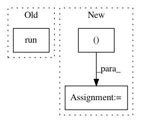

459441e166ebcd176698041e260d4f467652e7ac,softlearning/policies/latent_space_policy.py,LatentSpacePolicy,get_actions,#LatentSpacePolicy#Any#Any#Any#,197
Before Change
assert not with_log_pis, "No log pi for deterministic action"
if with_raw_actions:
return tf.get_default_session().run(
[self._det_actions, self._det_actions_raw],
feed_dict=feed_dict)
else:
return tf.get_default_session().run(
self._det_actions,
feed_dict=feed_dict)
After Change
assert not with_log_pis, "No log_pis for deterministic action"
fetches = (
self._det_actions,
NO_OP,
self._det_actions_raw if with_raw_actions else NO_OP)
return tf.get_default_session().run(fetches, feed_dict=feed_dict)
return super(LatentSpacePolicy, self).get_actions(
In pattern: SUPERPATTERN
Frequency: 3
Non-data size: 3
Instances
Project Name: rail-berkeley/softlearning
Commit Name: 459441e166ebcd176698041e260d4f467652e7ac
Time: 2018-07-21
Author: kristian.hartikainen@gmail.com
File Name: softlearning/policies/latent_space_policy.py
Class Name: LatentSpacePolicy
Method Name: get_actions
Project Name: rail-berkeley/softlearning
Commit Name: afe7121893302a869628802432c34866a1b38bb3
Time: 2018-11-23
Author: hartikainen@berkeley.edu
File Name: softlearning/misc/plotter.py
Class Name: QFPolicyPlotter
Method Name: _plot_level_curves
Project Name: rail-berkeley/softlearning
Commit Name: b2be6dc53ca9328e7b4b29ddd5cc8c0d45b2f414
Time: 2018-06-21
Author: kristian.hartikainen@gmail.com
File Name: examples/mujoco_all_ray.py
Class Name:
Method Name: run_experiment